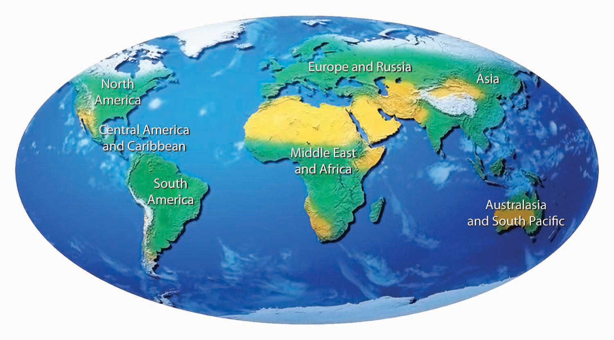
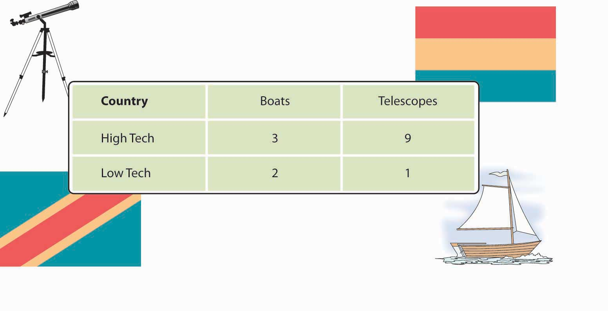
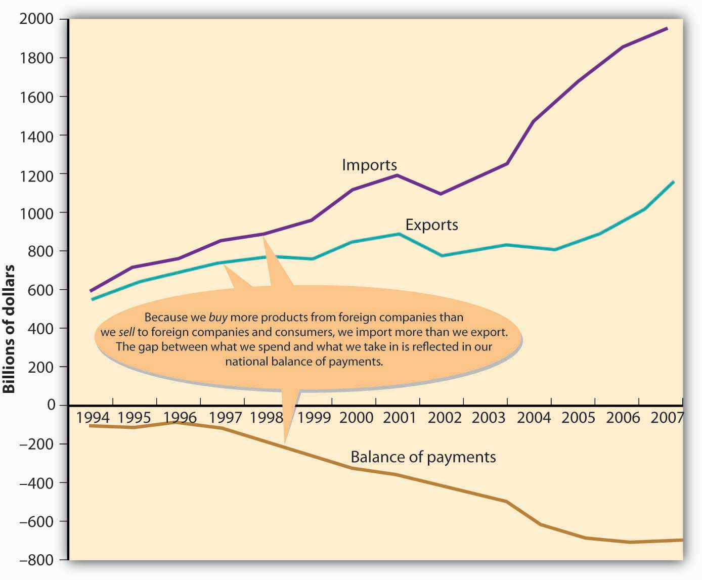
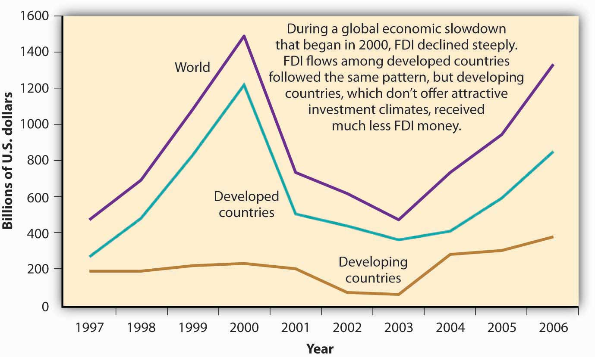
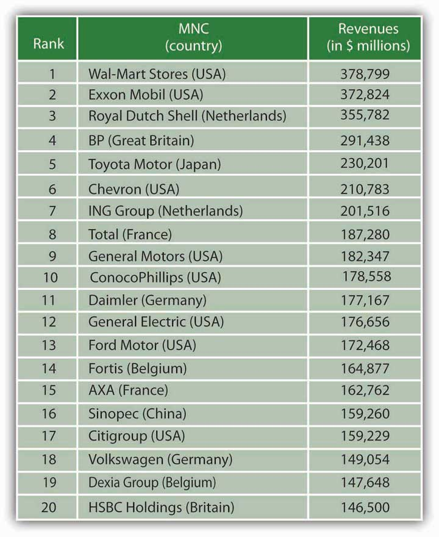
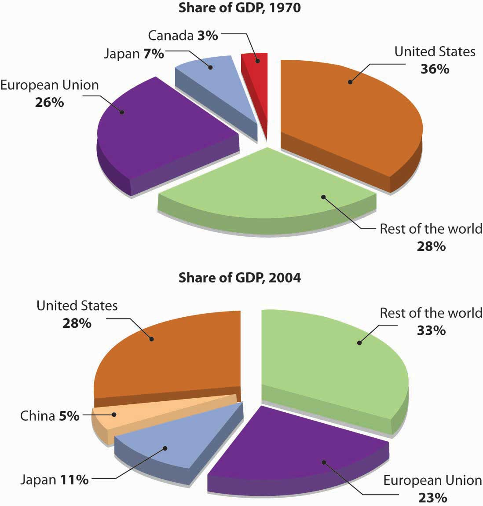
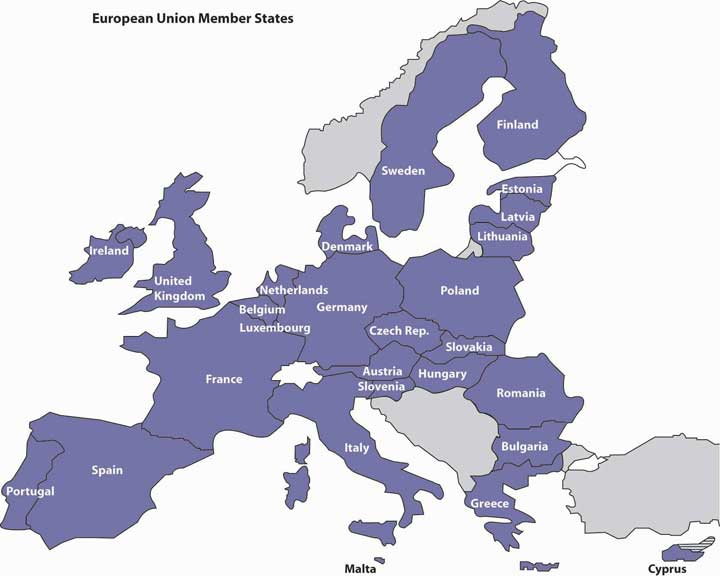

Figure 3.1 The World
Do you wear Nike shoes or Timberland boots? Buy groceries at Tops Friendly Markets, Giant Stores, or Stop & Shop? Listen to Jennifer Lopez, Bruce Springsteen, or the Dixie Chicks? If you answered yes to any of these questions, you’re a global business customer. Both Nike and Timberland manufacture most of their products overseas. The Dutch firm Royal Ahold owns all three supermarket chains. Sony Music, the label that records J. Lo, the Boss, and the Chicks, belongs to a Japanese company.
Take an imaginary walk down Orchard Road, the most fashionable shopping area in Singapore. You’ll pass department stores such as Tokyo-based Takashimaya and London’s very British Marks & Spencer, both filled with such well-known international labels as Ralph Lauren Polo, Burberry, Chanel, and Nokia. If you need a break, you can also stop for a latte at Seattle-based Starbucks or buy books, CDs, and DVDs at Borders Books and Music, which is headquartered in Ann Arbor, Michigan.
When you’re in the Chinese capital of Beijing, don’t miss Tiananmen Square. Parked in front of the Great Hall of the People, the seat of Chinese government, are fleets of black Buicks, cars made by General Motors in Flint, Michigan. If you’re adventurous enough to find yourself in Faisalabad, a medium-size city in Pakistan, you’ll see locals riding donkeys, camels pulling carts piled with agricultural produce, and Hamdard University, located in a refurbished hotel. Step inside its computer labs, and the sensation of being in a faraway place will likely disappear: on the computer screens, you’ll recognize the familiar Microsoft flag—the same one emblazoned on screens in Microsoft’s hometown of Seattle and just about everywhere else on the planet.
The globalization of business is bound to affect you. Not only will you buy products manufactured overseas, but it’s highly likely that you’ll meet and work with individuals from various countries and cultures as customers, suppliers, colleagues, employees, or employers. The bottom line is that the globalization of world commerce has an impact on all of us. Therefore, it makes sense to learn more about how globalization works.
Never before has business spanned the globe the way it does today. But why is international business important? Why do companies and nations engage in international trade? What strategies do they employ in the global marketplace? What challenges do companies face when they do business overseas? How do governments and international agencies promote and regulate international trade? Is the globalization of business a good thing? What career opportunities are there for you in global business? How should you prepare yourself to take advantage of them? These are the questions that we’ll be addressing in this chapter. Let’s start by looking at the more specific reasons why companies and nations engage in international trade.
Why does the United States import automobiles, steel, digital phones, and apparel from other countries? Why don’t we just make them ourselves? Why do other countries buy wheat, chemicals, machinery, and consulting services from us? Because no national economy produces all the goods and services that its people need. Countries are importers when they buy goods and services from other countries; when they sell products to other nations, they’re exporters. (We’ll discuss importing and exporting in greater detail later in the chapter.) The monetary value of international trade is enormous. In 2007, the total value of worldwide trade in merchandise and commercial services was $16.8 trillion.World Trade Organization, press release, “WTO: developing, transition economies cushion trade slowdown,” April 17, 2008 (accessed November 1, 2008).
To understand why certain countries import or export certain products, you need to realize that every country (or region) can’t produce the same products. The cost of labor, the availability of natural resources, and the level of know-how vary greatly around the world. Most economists use the concepts of absolute advantage and comparative advantage to explain why countries import some products and export others.
A nation has an absolute advantageCondition whereby a country is the only source of a product or is able to make more of a product using the same or fewer resources than other countries. if (1) it’s the only source of a particular product or (2) it can make more of a product using the same amount of or fewer resources than other countries. Because of climate and soil conditions, for example, Brazil has an absolute advantage in coffee beans and France has an absolute advantage in wine production. Unless, however, an absolute advantage is based on some limited natural resource, it seldom lasts. That’s why there are few examples of absolute advantage in the world today. Even France’s dominance of worldwide wine production, for example, is being challenged by growing wine industries in Italy, Spain, and the United States.
How can we predict, for any given country, which products will be made and sold at home, which will be imported, and which will be exported? This question can be answered by looking at the concept of comparative advantageCondition whereby one nation is able to produce a product at a lower opportunity cost compared to another nation., which exists when a country can produce a product at a lower opportunity cost compared to another nation. But what’s an opportunity cost? Opportunity costs are the products that a country must decline to make in order to produce something else. When a country decides to specialize in a particular product, it must sacrifice the production of another product.
Let’s simplify things by imagining a world with only two countries—the Republic of High Tech and the Kingdom of Low Tech. Each country knows how to make two and only two products: wooden boats and telescopes. Each country spends half its resources (labor and capital) on each good. Figure 3.3 "Comparative Advantage in the Techs" shows the daily output for both countries. (They’re not highly productive, as we’ve imagined two very small countries.)
Figure 3.3 Comparative Advantage in the Techs
First, note that High Tech has an absolute advantage in both boats and telescopes: it can make more boats (three versus two) and more telescopes (nine versus one) than Low Tech can with the same resources. So, why doesn’t High Tech make all the boats and all the telescopes needed for both countries? Because it lacks sufficient resources and must, therefore, decide how much of its resources to devote to each of the two goods. Assume, for example, that each country could devote 100 percent of its resources on either of the two goods. Start with boats. If both countries spend all their resources on boats (and make no telescopes), here’s what happens:
Now to telescopes. Here’s what happens if each country spends all its time making telescopes and makes no boats:
Each country will specialize in making the good for which it has a comparative advantage—that is, the good that it can make most efficiently, relative to the other country. High Tech will devote its resources to telescopes (which it’s good at making), and Low Tech will put its resources into boat making (which it does well). High Tech will export its excess telescopes to Low Tech, which will pay for the telescopes with the money it earns by selling its excess boats to High Tech. Both countries will be better off.
Things are a lot more complex in the real world, but, generally speaking, nations trade to exploit their advantages. They benefit from specialization, focusing on what they do best, and trading the output to other countries for what they do best. The United States, for instance, is increasingly an exporter of knowledge-based products, such as software, movies, music, and professional services (management consulting, financial services, and so forth). America’s colleges and universities, therefore, are a source of comparative advantage, and students from all over the world come to the United States for the world’s best higher-education system.
France and Italy are centers for fashion and luxury goods and are leading exporters of wine, perfume, and designer clothing. Japan’s engineering expertise has given it an edge in such fields as automobiles and consumer electronics. And with large numbers of highly skilled graduates in technology, India has become the world’s leader in low-cost, computer-software engineering.
To evaluate the nature and consequences of its international trade, a nation looks at two key indicators. We determine a country’s balance of tradeDifference between the value of a nation’s imports and its exports during a specified period. by subtracting the value of its imports from the value of its exports. If a country sells more products than it buys, it has a favorable balance, called a trade surplusCondition whereby a country sells more products than it buys, resulting in a favorable trade balance.. If it buys more than it sells, it has an unfavorable balance, or a trade deficitCondition whereby a country buys more products than it sells, resulting in an unfavorable trade balance..
For many years, the United States has had a trade deficit: we buy far more goods from the rest of the world than we sell overseas. This fact shouldn’t be surprising. With high income levels, we not only consume a sizable portion of our own domestically produced goods but enthusiastically buy imported goods. Other countries, such as China and Taiwan, which manufacture primarily for export, have large trade surpluses because they sell far more goods overseas than they buy.
Are trade deficits a bad thing? Not necessarily. They can be positive if a country’s economy is strong enough both to keep growing and to generate the jobs and incomes that permit its citizens to buy the best the world has to offer. That was certainly the case in the United States in the 1990s. Some experts, however, are alarmed at our rapidly accelerating trade deficit. Investment guru Warren Buffet, for example, cautions that no country can continuously sustain large and burgeoning trade deficits. Why not? Because creditor nations will eventually stop taking IOUs from debtor nations, and when that happens, the national spending spree will have to cease. “Our national credit card,” he warns, “allows us to charge truly breathtaking amounts. But that card’s credit line is not limitless.”Warren E. Buffet, “Why I’m Not Buying the U.S. Dollar,” Wall Street Week with Fortune, http://www.pbs.org/wsw/news/fortunearticle_20031026_03.html (accessed May 25, 2006).
By the same token, trade surpluses aren’t necessarily good for a nation’s consumers. Japan’s export-fueled economy produced high economic growth in the 1970s and 1980s. But most domestically made consumer goods were priced at artificially high levels inside Japan itself—so high, in fact, that many Japanese traveled overseas to buy the electronics and other high-quality goods on which Japanese trade was dependent. CD players and televisions were significantly cheaper in Honolulu or Los Angeles than in Tokyo. How did this situation come about? Though Japan manufactures a variety of goods, many of them are made for export. To secure shares in international markets, Japan prices its exported goods competitively. Inside Japan, because competition is limited, producers can put artificially high prices on Japanese-made goods. Due to a number of factors (high demand for a limited supply of imported goods, high shipping and distribution costs, and other costs incurred by importers in a nation that tends to protect its own industries), imported goods are also expensive.“Why Are Prices in Japan So Damn High?” The Japan FAQ, http://www.geocities.com/japanfaq/FAQ-Prices.html (accessed May 25, 2006).
The second key measure of the effectiveness of international trade is balance of paymentsDifference between the total flow of money coming into a country and the total flow of money going out.: the difference, over a period of time, between the total flow of money coming into a country and the total flow of money going out. As in its balance of trade, the biggest factor in a country’s balance of payments is the money that comes in and goes out as a result of imports and exports. But balance of payments includes other cash inflows and outflows, such as cash received from or paid for foreign investment, loans, tourism, military expenditures, and foreign aid. For example, if a U.S. company buys some real estate in a foreign country, that investment counts in the U.S. balance of payments, but not in its balance of trade, which measures only import and export transactions. In the long run, having an unfavorable balance of payments can negatively affect the stability of a country’s currency. Some observers are worried about the U.S. dollar, which has undergone an accelerating pattern of unfavorable balances of payments since the 1970s. For one thing, carrying negative balances has forced the United States to cover its debt by borrowing from other countries.Warren E. Buffet, “Why I’m Not Buying the U.S. Dollar,” Wall Street Week with Fortune, http://www.pbs.org/wsw/news/fortunearticle_20031026_03.html (accessed May 25, 2006). Figure 3.5 "U.S. Imports, Exports, and Balance of Payments, 1994–2007" provides a brief historical overview to illustrate the relationship between the United States’ balance of trade and its balance of payments.
Figure 3.5 U.S. Imports, Exports, and Balance of Payments, 1994–2007
Note: Figures are for “goods” only, not “goods and services.”
Source: U.S. Census Bureau, Foreign Trade Division.
Nations trade because they don’t produce all the products that their inhabitants need.
To explain how countries decide what products to import and export, economists use the concepts of absolute and comparative advantage.
We determine a country’s balance of trade by subtracting the value of its imports from the value of its exports.
The balance of payments is the difference, over a period of time, between the total flow coming into a country and the total flow going out.
(AACSB) Analysis
We use the concepts of absolute and comparative advantage to explain why countries import some products and export others. We can also use them to explain how work can be divided between two persons. Two consultants—Jennifer and John—have a client who needs a company report written and a PowerPoint presentation prepared within the next two weeks. Both Jennifer and John have experience writing reports and preparing presentations, but neither has the time to do both jobs. From past experience, they know how much time each of them needs to complete each type of project:
| Consultant | Write a report | Prepare a presentation |
|---|---|---|
| John | 80 hours | 40 hours |
| Jennifer | 150 hours | 60 hours |
Using the information contained in the grid above, answer each of the following questions:
(AACSB) Analysis
What happens if, during a given year, you spend more money than you take in? What happens if you finance your overspending by running up your credit-card balance to some outrageous limit? Would you have trouble borrowing in the future? Would you have to pay higher interest rates? How would you get out of debt?
Now let’s change you to the United States. The United States has just run up one of the largest one-year trade deficits in history—for 2007 the trade deficit was more than $700 billion. Respond to the following items:
The fact that nations exchange billions of dollars in goods and services each year demonstrates that international trade makes good economic sense. For an American company wishing to expand beyond national borders, there are a variety of ways it can get involved in international business. Let’s take a closer look at the more popular ones.
ImportingPractice of buying products overseas and reselling them in one’s own country. (buying products overseas and reselling them in one’s own country) and exportingPractice of selling domestic products to foreign customers. (selling domestic products to foreign customers) are the oldest and most prevalent forms of international trade. For many companies, importing is the primary link to the global market. American food and beverage wholesalers, for instance, import the bottled water Evian from its source in the French Alps for resale in U.S. supermarkets.Fine Waters Media, “Bottled Water of France,” http://www.finewaters.com/Bottled_Water/France/Evian.asp (accessed May 25, 2006). Other companies get into the global arena by identifying an international market for their products and become exporters. The Chinese, for instance, are increasingly fond of fast foods cooked in soybean oil. Because they also have an increasing appetite for meat, they need high-protein soybeans to raise livestock.H. Frederick Gale, “China’s Growing Affluence: How Food Markets Are Responding” (U.S. Department of Agriculture, June 2003), http://www.ers.usda.gov/Amberwaves/June03/Features/ChinasGrowingAffluence.htm (accessed May 25, 2006). As a result, American farmers now export over $1 billion worth of soybeans to China every year.
A company that wants to get into an international market quickly while taking only limited financial and legal risks might consider licensing agreements with foreign companies. An international licensing agreementAgreement that allows a foreign company to sell a domestic company’s products or use its intellectual property in exchange for royalty fees. allows a foreign company (the licensee) to sell the products of a producer (the licensor) or to use its intellectual property (such as patents, trademarks, copyrights) in exchange for royalty fees. Here’s how it works: You own a company in the United States that sells coffee-flavored popcorn. You’re sure that your product would be a big hit in Japan, but you don’t have the resources to set up a factory or sales office in that country. You can’t make the popcorn here and ship it to Japan because it would get stale. So you enter into a licensing agreement with a Japanese company that allows your licensee to manufacture coffee-flavored popcorn using your special process and to sell it in Japan under your brand name. In exchange, the Japanese licensee would pay you a royalty fee.
Another popular way to expand overseas is to sell franchises. Under an international franchiseAgreement in which a domestic company (franchiser) gives a foreign company (franchisee) the right to use its brand and sell its products. agreement, a company (the franchiser) grants a foreign company (the franchisee) the right to use its brand name and to sell its products or services. The franchisee is responsible for all operations but agrees to operate according to a business model established by the franchiser. In turn, the franchiser usually provides advertising, training, and new-product assistance. Franchising is a natural form of global expansion for companies that operate domestically according to a franchise model, including restaurant chains, such as McDonald’s and Kentucky Fried Chicken, and hotel chains, such as Holiday Inn and Best Western.
Because of high domestic labor costs, many U.S. companies manufacture their products in countries where labor costs are lower. This arrangement is called international contract manufacturingPractice by which a company produces goods through an independent contractor in a foreign country. or outsourcingPractice of using outside vendors to manufacture all or part of a company’s actual products.. A U.S. company might contract with a local company in a foreign country to manufacture one of its products. It will, however, retain control of product design and development and put its own label on the finished product. Contract manufacturing is quite common in the U.S. apparel business, with most American brands being made in Asia (China and Malaysia) and Latin America (Mexico and the Dominican Republic).
Thanks to twenty-first-century information technology, nonmanufacturing functions can also be outsourced to nations with lower labor costs. U.S. companies increasingly draw on a vast supply of relatively inexpensive skilled labor to perform various business services, such as software development, accounting, and claims processing. For years, American insurance companies have processed much of their claims-related paperwork in Ireland. With a large, well-educated population, India has become a center for software development and customer-call centers for American companies. In the case of India, as you can see in Table 3.1 "Selected Hourly Wages, United States and India", the attraction is not only a large pool of knowledge workers, but also significantly lower wages.
Table 3.1 Selected Hourly Wages, United States and India
| Occupation | U.S. Wage | Indian Wage |
|---|---|---|
| Telephone operator | $12.57 | Under $1.00 |
| Health-record technical worker/Medical transcriber | $13.17 | $1.50–$2.00 |
| Payroll clerk | $15.17 | $1.50–$2.00 |
| Legal assistant/paralegal | $17.86 | $6.00–$8.00 |
| Accountant | $23.35 | $6.00–$15.00 |
| Financial researcher/analyst | $33.00–$35.00 | $6.00–$15.00 |
What if a company wants to do business in a foreign country but lacks the expertise or resources? Or what if the target nation’s government doesn’t allow foreign companies to operate within its borders unless it has a local partner? In these cases, a firm might enter into a strategic alliance with a local company or even with the government itself. A strategic allianceAgreement between two companies (or a company and a nation) to pool resources in order to achieve business goals that benefit both partners. is an agreement between two companies (or a company and a nation) to pool resources in order to achieve business goals that benefit both partners. For example, Viacom (a leading global media company) has a strategic alliance with Beijing Television to produce Chinese-language music and entertainment programming.Viacom International, “Viacom Announces a Strategic Alliance for Chinese Content Production with Beijing Television (BTV),” October 16, 2004, http://www.viacom.com/press.tin?ixPressRelease=80454169.
An alliance can serve a number of purposes:
Alliances range in scope from informal cooperative agreements to joint venturesAlliances in which the partners fund a separate entity (partnership or corporation) to manage their joint operations.—alliances in which the partners fund a separate entity (perhaps a partnership or a corporation) to manage their joint operation. Magazine publisher Hearst, for example, has joint ventures with companies in several countries. So, young women in Israel can read Cosmo Israel in Hebrew, and Russian women can pick up a Russian-language version of Cosmo that meets their needs. The U.S. edition serves as a starting point to which nationally appropriate material is added in each different nation. This approach allows Hearst to sell the magazine in more than fifty countries.Liz Borod, “DA! To the Good Life,” Folio, September 1, 2004, http://www.keepmedia.com/pubs/Folio/2004/09/01/574543?ba=m&bi=1&bp=7 (accessed May 25, 2006); Jill Garbi, “Cosmo Girl Goes to Israel,” Folio, November 1, 2003, http://www.keepmedia.com/pubs/Folio/2003/11/01/293597?ba=m&bi=0&bp=7 (accessed May 25, 2006); Liz Borod, “A Passage to India,” Folio, August 1, 2004, http://www.keepmedia.com/pubs/Forbes/2000/10/30/1017010?ba=a&bi=1&bp=7 (accessed May 25, 2006); Jill Garbi, “A Sleeping Media Giant?” Folio, January 1, 2004, http://www.keepmedia.com/pubs/Folio/2004/01/01/340826?ba=m&bi=0&bp=7 (accessed May 25, 2006).
Many of the approaches to global expansion that we’ve discussed so far allow companies to participate in international markets without investing in foreign plants and facilities. As markets expand, however, a firm might decide to enhance its competitive advantage by making a direct investment in operations conducted in another country. Foreign direct investment (FDI)Formal establishment of business operations (such as the building of factories or sales offices) on foreign soil. refers to the formal establishment of business operations on foreign soil—the building of factories, sales offices, and distribution networks to serve local markets in a nation other than the company’s home country.
FDI is generally the most expensive commitment that a firm can make to an overseas market, and it’s typically driven by the size and attractiveness of the target market. For example, German and Japanese automakers, such as BMW, Mercedes, Toyota, and Honda, have made serious commitments to the U.S. market: most of the cars and trucks that they build in plants in the South and Midwest are destined for sale in the United States.
A common form of FDI is the foreign subsidiaryIndependent company owned by a foreign firm (called its parent).: an independent company owned by a foreign firm (called the parent). This approach to going international not only gives the parent company full access to local markets but also exempts it from any laws or regulations that may hamper the activities of foreign firms. The parent company has tight control over the operations of a subsidiary, but while senior managers from the parent company often oversee operations, many managers and employees are citizens of the host country. Not surprisingly, most very large firms have foreign subsidiaries. IBM and Coca-Cola, for example, have both had success in the Japanese market through their foreign subsidiaries (IBM-Japan and Coca-Cola–Japan). FDI goes in the other direction, too, and many companies operating in the United States are in fact subsidiaries of foreign firms. Gerber Products, for example, is a subsidiary of the Swiss company Novartis, while Stop & Shop and Giant Food Stores belong to the Dutch company Royal Ahold.
Where does most FDI capital end up? Figure 3.7 "Where FDI Goes" provides an overview of amounts, trends, and destinations.
Figure 3.7 Where FDI Goes
All these strategies have been successful in the arena of global business. But success in international business involves more than merely finding the best way to reach international markets. Doing global business is a complex, risky endeavor. As many companies have learned the hard way, people and organizations don’t do things the same way abroad as they do at home. What differences make global business so tricky? That’s the question that we’ll turn to next.
A company that operates in many countries is called a multinational corporation (MNC)Large corporation that operates in many countries.. Fortune magazine’s roster of the top five hundred MNCs speaks for the strong global position of U.S. business: almost 40 percent are headquartered in the United States, and these U.S. companies make up half the top ten: Wal-Mart (number 1), Exxon Mobil (number 3), General Motors (number 5), Ford (number 8), and General Electric (number 9).Daniel Gross, “The 2005 Global 500,” Fortune, July 25, 2005, http://money.cnn.com/magazines/fortune/global500 (accessed May 27, 2006). Figure 3.8 "The World’s Twenty Largest MNCs" lists the twenty largest MNCs in the world, according to revenues.
Figure 3.8 The World’s Twenty Largest MNCs
MNCs often adopt the approach encapsulated in the motto “Think globally, act locally.” They often adjust their operations, products, marketing, and distribution to mesh with the environments of the countries in which they operate. Because they understand that a “one-size-fits-all” mentality doesn’t make good business sense when they’re trying to sell products in different markets, they’re willing to accommodate cultural and economic differences. Increasingly, MNCs supplement their mainstream product line with products designed for local markets. Coca-Cola, for example, produces coffee and citrus-juice drinks developed specifically for the Japanese market.James C. Morgan and J. Jeffrey Morgan, Cracking the Japanese Market (New York: Free Press, 1991), 102. When such companies as Nokia and Motorola design cell phones, they’re often geared to local tastes in color, size, and other features. McDonald’s provides a vegetarian menu in India, where religious convictions affect the demand for beef and pork.McDonald’s India, “Respect for Local Culture,” http://www.mcdonaldsindia.com/loccul.htm (accessed May 25, 2006). In Germany, McDonald’s caters to local tastes by offering beer in some restaurants.McDonald’s Corp., “A Taste of McDonald’s Around the World,” media.mcdonalds.com, http://www.media.mcdonalds.com/secured/products/international (accessed May 25, 2006).
Likewise, many MNCs have made themselves more sensitive to local market conditions by decentralizing their decision making. While corporate headquarters still maintain a fair amount of control, home-country managers keep a suitable distance by relying on modern telecommunications. Today, fewer managers are dispatched from headquarters; MNCs depend instead on local talent. Not only does decentralized organization speed up and improve decision making, but it also allows an MNC to project the image of a local company. IBM, for instance, has been quite successful in the Japanese market because local customers and suppliers perceive it as a Japanese company. Crucial to this perception is the fact that the vast majority of IBM’s Tokyo employees, including top leadership, are Japanese nationals.James C. Morgan and J. Jeffrey Morgan, Cracking the Japanese Market (New York: Free Press, 1991), 117.
The global reach of MNCs is a source of criticism, as well as praise. Critics argue that they often destroy the livelihoods of home-country workers by moving jobs to developing countries where workers are willing to labor under poor conditions and for less pay. They also contend that traditional lifestyles and values are being weakened, and even destroyed, as global brands foster a global culture of American movies; fast food; and cheap, mass-produced consumer products. Still others claim that the demand of MNCs for constant economic growth and cheaper access to natural resources do irreversible damage to the physical environment. All these negative consequences, critics maintain, stem from the abuses of international trade—from the policy of placing profits above people, on a global scale. These views surfaced in violent street demonstrations in Seattle in 1999 and Genoa, Italy, in 2000, and since then, meetings of the International Monetary Fund and World Bank have regularly been assailed by large crowds of protestors who have succeeded in catching the attention of the worldwide media.
Meanwhile, supporters of MNCs respond that huge corporations deliver better, cheaper products for customers everywhere; create jobs; and raise the standard of living in developing countries. They also argue that globalization increases cross-cultural understanding. Says Anne O. Kruger, first deputy managing director of the IMF:
“The impact of the faster growth on living standards has been phenomenal. We have observed the increased well being of a larger percentage of the world’s population by a greater increment than ever before in history. Growing incomes give people the ability to spend on things other than basic food and shelter, in particular on things such as education and health. This ability, combined with the sharing among nations of medical and scientific advances, has transformed life in many parts of the developing world. Infant mortality has declined from 180 per 1,000 births in 1950 to 60 per 1,000 births. Literacy rates have risen from an average of 40 percent in the 1950s to over 70 percent today. World poverty has declined, despite still-high population growth in the developing world.””Anne O. Krueger, “Supporting Globalization” (remarks, 2002 Eisenhower National Security Conference on “National Security for the 21st Century: Anticipating Challenges, Seizing Opportunities, Building Capabilities,” September 26, 2002), http://www.imf.org/external/np/speeches/2002/092602a.htm (accessed May 25, 2006).
(AACSB) Analysis
You own a company that employs about two hundred people in Maine to produce hockey sticks. Why might you decide to outsource your production to Indonesia? Would closing your plant and moving your operations overseas help or hurt the U.S. economy? Who would be hurt? Who would be helped? Now, armed with answers to these questions, ask yourself whether you would indeed move your facilities or continue making hockey sticks in Maine. Explain your decision.
In the classic movie The Wizard of Oz, a magically misplaced Midwest farm girl takes a moment to survey the bizarre landscape of Oz and then comments to her little dog, “I don’t think we’re in Kansas anymore, Toto.” That sentiment probably echoes the reaction of many businesspeople who find themselves in the midst of international ventures for the first time. The differences between the foreign landscape and the one with which they’re familiar are often huge and multifaceted. Some are quite obvious, such as differences in language, currency, and everyday habits (say, using chopsticks instead of silverware). But others are subtle, complex, and sometimes even hidden. Success in international business means understanding a wide range of cultural, economic, legal, and political differences between countries. Let’s look at some of the more important of these differences.
Even when two people from the same country communicate, there’s always a possibility of misunderstanding. When people from different countries get together, that possibility increases substantially. Differences in communication styles reflect differences in cultureSystem of shared beliefs, values, customs, and behaviors that govern the interactions of members of a society.: the system of shared beliefs, values, customs, and behaviors that govern the interactions of members of a society. Cultural differences create challenges to successful international business dealings. We explain a few of these challenges in the following sections.
English is the international language of business. The natives of such European countries as France and Spain certainly take pride in their own languages and cultures, but nevertheless English is the business language of the European Community. Whereas only a few educated Europeans have studied Italian or Norwegian, most have studied English. Similarly, on the South Asian subcontinent, where hundreds of local languages and dialects are spoken, English is the official language. In most corners of the world, English-only speakers—such as most Americans—have no problem finding competent translators and interpreters. So why is language an issue for English speakers doing business in the global marketplace?
In many countries, only members of the educated classes speak English. The larger population—which is usually the market you want to tap—speaks the local tongue. Advertising messages and sales appeals must take this fact into account. More than one English translation of an advertising slogan has resulted in a humorous (and perhaps serious) blunder. Some classics are listed in Table 3.2 "Lost in Translation".
Table 3.2 Lost in Translation
| In Belgium, the translation of the slogan of an American auto-body company, “Body by Fisher,” came out as “Corpse by Fisher.” |
| Translated into German, the slogan “Come Alive with Pepsi” became “Come out of the Grave with Pepsi.” |
| A U.S. computer company in Indonesia translated “software” as “underwear.” |
| A German chocolate product called “Zit” didn’t sell well in the United States. |
| An English-speaking car-wash company in Francophone Quebec advertised itself as a “lavement d’auto” (“car enema”) instead of the correct “lavage d’auto.” |
| A proposed new soap called “Dainty” in English came out as “aloof” in Flemish (Belgium), “dimwitted” in Farsi (Iran), and “crazy person” in Korea; the product was shelved. |
| One false word in a Mexican commercial for an American shirt maker changed “When I used this shirt, I felt good” to “Until I used this shirt, I felt good.” |
| In the 1970s, GM’s Chevy Nova didn’t get on the road in Puerto Rico, in part because Nova in Spanish means “It doesn’t go.” |
| A U.S. appliance ad fizzled in the Middle East because it showed a well-stocked refrigerator featuring a large ham, thus offending the sensibilities of Muslim consumers, who don’t eat pork. |
Furthermore, relying on translators and interpreters puts you as an international businessperson at a disadvantage. You’re privy only to interpretations of the messages that you’re getting, and this handicap can result in a real competitive problem. Maybe you’ll misread the subtler intentions of the person with whom you’re trying to conduct business. The best way to combat this problem is to study foreign languages. Most people appreciate some effort to communicate in their local language, even on the most basic level. They even appreciate mistakes you make resulting from a desire to demonstrate your genuine interest in the language of your counterparts in foreign countries. The same principle goes doubly when you’re introducing yourself to non-English speakers in the United States. Few things work faster to encourage a friendly atmosphere than a native speaker’s willingness to greet a foreign guest in the guest’s native language.
Americans take for granted many of the cultural aspects of our business practices. Most of our meetings, for instance, focus on business issues, and we tend to start and end our meetings on schedule. These habits stem from a broader cultural preference: we don’t like to waste time. (It was an American, Benjamin Franklin, who coined the phrase “Time is Money.”) This preference, however, is by no means universal. The expectation that meetings will start on time and adhere to precise agendas is common in parts of Europe (especially the Germanic countries), as well as in the United States, but elsewhere—say, in Latin America and the Middle East—people are often late to meetings.
Likewise, don’t expect businesspeople from these regions—or businesspeople from most of Mediterranean Europe, for that matter—to “get down to business” as soon as a meeting has started. They’ll probably ask about your health and that of your family, inquire whether you’re enjoying your visit to their country, suggest local foods, and generally appear to be avoiding serious discussion at all costs. For Americans, such topics are conducive to nothing but idle chitchat, but in certain cultures, getting started this way is a matter of simple politeness and hospitality.
If you ever find yourself in such a situation, the best advice is to go with the flow and be receptive to cultural nuances. In high-context culturesCultures in which personal and family connections have an effect on most interactions, including those in business., the numerous interlocking (and often unstated) personal and family connections that hold people together have an effect on almost all interactions. Because people’s personal lives overlap with their business lives (and vice versa), it’s important to get to know your potential business partners as human beings and individuals.
By contrast, in low-context culturesCultures in which personal and work relationships are compartmentalized., such as those of the United States, Germany, Switzerland, and the Scandinavian countries, personal and work relationships are more compartmentalized: you don’t necessarily need to know much about the personal context of a person’s life to deal with him or her in the business arena.
Different cultures have different communication styles—a fact that can take some getting used to. For example, degrees of animation in expression can vary from culture to culture. Southern Europeans and Middle Easterners are quite animated, favoring expressive body language along with hand gestures and raised voices. Northern Europeans are far more reserved. The English, for example, are famous for their understated style and the Germans for their formality in most business settings. In addition, the distance at which one feels comfortable when talking with someone varies by culture. People from the Middle East like to converse from a distance of a foot or less, while Americans prefer more personal space.
Finally, while people in some cultures prefer to deliver direct, clear messages, others use language that’s subtler or more indirect. North Americans and most Northern Europeans fall into the former category and many Asians into the latter. But even within these categories, there are differences. Though typically polite, Chinese and Koreans are extremely direct in expression, while Japanese are indirect. This example brings up two important points. First, avoid lumping loosely related cultures together. We sometimes talk, for example, about “Asian culture,” but such broad categories as “Asian” are usually oversimplifications. Japanese culture is different from Korean, which is different from Chinese. Second, never assume that two people from the same culture will always act in a similar manner. Not all Latin Americans are casual about meeting times, not all Italians use animated body language, and not all Germans are formal.
In summary, learn about a country’s culture and use your knowledge to help improve the quality of your business dealings. Learn to value the subtle differences among cultures, but don’t allow cultural stereotypes to dictate how you interact with people from any culture. Treat each person as an individual and spend time getting to know what he or she is about.
If you plan to do business in a foreign country, you need to know its level of economic development. You also should be aware of factors influencing the value of its currency and the impact that changes in that value will have on your profits.
If you don’t understand a nation’s level of economic development, you’ll have trouble answering some basic questions, such as, Will consumers in this country be able to afford the product I want to sell? How many units can I expect to sell? Will it be possible to make a reasonable profit?
A country’s level of economic development is related to its standard of living, which can be evaluated using an economic indicator called gross national income (GNI) per capitaEstimate of each citizen’s share of national income.. To calculate GNI per capita, we divide the value of all goods and services produced in a country (its GNI) by its average population, to arrive at an estimate of each citizen’s share of national income.
The World Bank, which lends money for improvements in underdeveloped nations, uses per-capita GNI to divide countries into four income categories:World Bank Group, “Country Classification,” Data and Statistics, http://www.worldbank.org/data/countryclass/countryclass.html (accessed May 25, 2006).
As you can see from Figure 3.9 "The World’s Wealth, 1970 and 2004", a large portion of the world’s wealth remains concentrated in just a few areas. Remember, however, that even though a country has a low GNI per capita, it can still be an attractive place for doing business. India, for example, is a lower-middle-income country, yet it has a population of a billion, and a segment of that population is well educated—an appealing feature for many business initiatives.
Figure 3.9 The World’s Wealth, 1970 and 2004
The long-term goal of many countries is to move up the economic development ladder. Some factors conducive to economic growth include a reliable banking system, a strong stock market, and government policies to encourage investment and competition while discouraging corruption. It’s also important that a country have a strong infrastructure—its systems of communications (telephone, Internet, television, newspapers), transportation (roads, railways, airports), energy (gas and electricity, power plants), and social facilities (schools, hospitals). These basic systems will help countries attract foreign investors, which can be crucial to economic development.
If every nation used the same currency, international trade would be a lot easier. Unfortunately, this is not the case. Let’s say that your business is importing watches from Switzerland. Because the watchmaker will want to be paid in Swiss francs, you have to figure out how many U.S. dollars you’ll need to buy the francs with which to pay the watchmaker. You’d start by finding out the exchange rate between the Swiss franc and the U.S. dollar. The exchange rateValue of one currency relative to another. tells you how much one currency is worth relative to another currency. So you need to know the value of the Swiss franc relative to the U.S. dollar.
You could simply look in a newspaper or go to any number of Web sites—say, http://www.oanda.com. Remember, however, that the exchange rate changes frequently. To keep things simple, let’s assume that the exchange rate is 1 Swiss franc = $0.81 U.S. (that is, 1 Swiss franc is worth $0.81). Let’s also assume that you owe the Swiss watchmaker 1,000 francs. Doing some quick math, you figure that it will take $810 to buy 1,000 francs (1,000 francs × the exchange rate of $0.81 = $810).
Now let’s say that you don’t have the cash flow to pay the watchmaker for two weeks. When you check the exchange rate two weeks later, you find that it has changed to 1 Swiss franc = $0.85. Are you better off or worse off? It’s easy to check: 1,000 francs × the new exchange rate of $0.85 = $850. You’ve just learned the hard way that when the value of the franc relative to the dollar goes up, it costs you more to buy something from Switzerland. You probably can’t help but wonder what would have happened if the value of the franc relative to the dollar had gone down—say, to $0.72 per franc. At this rate, you’d need only $720 to pay the 1,000 francs (1,000 × $0.72). In other words, when the value of the franc relative to the dollar drops, it costs less to buy goods from Switzerland. In sum you’ve learned the following:
In the interest of being thorough, let’s look at this phenomenon from the perspective of an American seller and a Swiss buyer. First, we need to know the exchange rate for the U.S. dollar relative to the franc, which happens to be $1 U.S. = 1.23 francs. This means that if you want to sell something—let’s say your latest painting—for $1,000 U.S. to an art lover in Switzerland, the Swiss buyer will need 1,230 francs to get the $1,000 needed to pay you. If the exchange rate were $1 U.S. = 1.40 francs, the cost of the painting would be $1,400. So now you also know the following:
One of the more difficult aspects of doing business globally is dealing with vast differences in legal and regulatory environments. The United States, for example, has an established set of laws and regulations that provide direction to businesses operating within its borders. But because there is no global legal system, key areas of business law—for example, contract provisions and copyright protection—can be treated in different ways in different countries. Companies doing international business often face many inconsistent laws and regulations. To navigate this sea of confusion, American businesspeople must know and follow both U.S. laws and regulations and those of nations in which they operate.
The annals of business history are filled with stories about American companies that have stumbled in trying to comply with foreign laws and regulations. Coca-Cola, for example, ran afoul of Italian law when it printed its ingredients list on the bottle cap rather than on the bottle itself. Italian courts ruled that the labeling was inadequate because most people throw the cap away. In another case, 3M applied to the Japanese government to create a joint venture with the Sumitomo Industrial Group to make and distribute magnetic tape products in Japan. 3M spent four years trying to satisfy Japan’s complex regulations, but by the time it got approval, domestic competitors, including Sony, had captured the market. By delaying 3M, Japanese regulators managed, in effect, to stifle foreign competition.David Ricks, Blunders in International Business (Malden, MA: Blackwell, 1999), 137.
One approach to dealing with local laws and regulations is hiring lawyers from the host country who can provide advice on legal issues. Another is working with local businesspeople who have experience in complying with regulations and overcoming bureaucratic obstacles.
One U.S. law that creates unique challenges for American firms operating overseas is the Foreign Corrupt Practices Act (FCPA), which prohibits the distribution of bribes and other favors in the conduct of business. Unfortunately, though they’re illegal in this country, such tactics as kickbacks and bribes are business-as-usual in many nations. According to some experts, American businesspeople are at a competitive disadvantage if they’re prohibited from giving bribes or undercover payments to foreign officials or businesspeople who expect them; it’s like asking for good service in a restaurant when the waiter knows you won’t be giving a tip. In theory, because the FPCA warns foreigners that Americans can’t give bribes, they’ll eventually stop expecting them.
Where are American businesspeople most likely and least likely to encounter bribe requests and related forms of corruption? Transparency International, an independent German-based organization, annually rates nations according to “perceived corruption,” which it defines as “the abuse of public office for private gain.” Table 3.3 "Corruptibility Around the World, 2004" excerpts the 2004 rankings.
Table 3.3 Corruptibility Around the World, 2004
| Rank | Country | CPI Score* |
|---|---|---|
| 1 | Finland | 9.7 |
| 2 | New Zealand | 9.6 |
| 3 | Denmark | 9.5 |
| Iceland | 9.5 | |
| 5 | Singapore | 9.3 |
| 6 | Sweden | 9.2 |
| 7 | Switzerland | 9.1 |
| 8 | Norway | 8.9 |
| 9 | Austria | 8.8 |
| 10 | Netherlands | 8.7 |
| 17 | Belgium | 7.5 |
| Ireland | 7.5 | |
| United States | 7.5 | |
| 133 | Congo, Democratic Republic | 2.0 |
| Côte d’Ivoire | 2.0 | |
| Georgia | 2.0 | |
| Indonesia | 2.0 | |
| Tajikistan | 2.0 | |
| Turkmenistan | 2.0 | |
| 140 | Azerbaijan | 1.9 |
| Paraguay | 1.9 | |
| 142 | Chad | 1.7 |
| Myanmar | 1.7 | |
| 144 | Nigeria | 1.6 |
| 145 | Bangladesh | 1.5 |
| Haiti | 1.5 | |
| *A score of 10 means that a country is squeaky clean. Anything under 3 means that corruption is rampant. | ||
(AACSB) Communication
After five years at a large sporting-goods company, your boss has asked you to spend six months managing the firm’s new office in Rio de Janeiro. It’s a good opportunity, but, unfortunately, you know absolutely nothing about life or anything else in Brazil. So, to get some advice on how to work and socialize with Brazilian businesspeople, you decide to do some online research. You’re particularly interested in understanding cultural differences in communication styles, dress, time, and sociability. To learn more about Brazilian businesspeople, go to these helpful sites:
Write a brief report to summarize what you learned about cultural differences between U.S. and Brazilian businesspeople.
(AACSB) Ethics
You’re a partner in a U.S. engineering firm that’s interested in bidding on a water-treatment project in China. You know that firms from two other countries—Malaysia and Italy—will submit bids. The U.S. Foreign Corrupt Practices Act forbids you from making any payment to Chinese officials to enlist their help in getting the job. Unfortunately, the governments of Malaysia and Italy don’t prohibit local firms from offering bribes. Are you at a disadvantage? Should the Foreign Corrupt Practices Act be repealed? Why, or why not?
(AACSB) Ethics
You’re the CEO of a multinational corporation and one-fourth of your workforce is infected with AIDS. If you had the means to help your workers and their families, would you do it? This is not strictly a hypothetical question: it’s one that’s faced by CEOs of multinational corporations with operations in Africa, parts of China, and India. To find out what some of them have decided, go to the BusinessWeek Web site (http://www.businessweek.com/magazine/content/04_31/b3894116_mz018.htm) and read the article “Why Business Should Make AIDS Its Business.” Then, answer the following questions:
The debate about the extent to which countries should control the flow of foreign goods and investments across their borders is as old as international trade itself. Governments continue to control trade. To better understand how and why, let’s examine a hypothetical case. Suppose you’re in charge of a small country in which people do two things—grow food and make clothes. Because the quality of both products is high and the prices are reasonable, your consumers are happy to buy locally made food and clothes. But one day, a farmer from a nearby country crosses your border with several wagonloads of wheat to sell. On the same day, a foreign clothes maker arrives with a large shipment of clothes. These two entrepreneurs want to sell food and clothes in your country at prices below those that local consumers now pay for domestically made food and clothes. At first, this seems like a good deal for your consumers: they won’t have to pay as much for food and clothes. But then you remember all the people in your country who grow food and make clothes. If no one buys their goods (because the imported goods are cheaper), what will happen to their livelihoods? Will everybody be out of work? And if everyone’s unemployed, what will happen to your national economy?
That’s when you decide to protect your farmers and clothes makers by setting up trade rules. Maybe you’ll increase the prices of imported goods by adding a tax to them; you might even make the tax so high that they’re more expensive than your homemade goods. Or perhaps you’ll help your farmers grow food more cheaply by giving them financial help to defray their costs. The government payments that you give to the farmers to help offset some of their costs of production are called subsidiesGovernment payments given to certain industries to help offset some of their costs of production.. These subsidies will allow the farmers to lower the price of their goods to a point below that of imported competitors’ goods. What’s even better is that the lower costs will allow the farmers to export their own goods at attractive, competitive prices.
The United States has a long history of subsidizing farmers. Subsidy programs guarantee farmers (including large corporate farms) a certain price for their crops, regardless of the market price. This guarantee ensures stable income in the farming community but can have a negative impact on the world economy. How? Critics argue that in allowing American farmers to export crops at artificially low prices, U.S. agricultural subsidies permit them to compete unfairly with farmers in developing countries. A reverse situation occurs in the steel industry, in which a number of countries—China, Japan, Russia, Germany, and Brazil—subsidize domestic producers. U.S. trade unions charge that this practice gives an unfair advantage to foreign producers and hurts the American steel industry, which can’t compete on price with subsidized imports.
Whether they push up the price of imports or push down the price of local goods, such initiatives will help locally produced goods compete more favorably with foreign goods. Both strategies are forms of trade controlsGovernment policies that restrict free trade.—policies that restrict free trade. Because they protect domestic industries by reducing foreign competition, the use of such controls is often called protectionismUse of trade controls to reduce foreign competition in order to protect domestic industries.. Though there’s considerable debate over the pros and cons of this practice, all countries engage in it to some extent. Before debating the issue, however, let’s learn about the more common types of trade restrictions: tariffs, quotas, and, embargoes.
TariffsGovernment taxes on imports that raise the price of foreign goods and make them less competitive with domestic goods. are taxes on imports. Because they raise the price of the foreign-made goods, they make them less competitive. The United States, for example, protects domestic makers of synthetic knitted shirts by imposing a stiff tariff of 32.5 percent on imports. Tariffs are also used to raise revenue for a government. Shoe imports are worth $1.63 billion annually to the federal government.Dustin Smith, “The Truth About Industrial Country Tariffs,” Finance & Development, September 2002, http://www.imf.org/external/pubs./ft/fandd/2002/09/smith.htm (accessed May 25, 2006).
A quotaGovernment-imposed restrictions on the quantity of a good that can be imported over a period of time. imposes limits on the quantity of a good that can be imported over a period of time. Quotas are used to protect specific industries, usually new industries or those facing strong competitive pressure from foreign firms. U.S. import quotas take two forms. An absolute quota fixes an upper limit on the amount of a good that can be imported during the given period. A tariff-rate quota permits the import of a specified quantity and then adds a high import tax once the limit is reached.
Sometimes quotas protect one group at the expense of another. To protect sugar beet and sugar cane growers, for instance, the United States imposes a tariff-rate quota on the importation of sugar—a policy that has driven up the cost of sugar to five times its actual price.See William F. Buckley, “W.T.O. at Bat,” Uexpress, http://www.townhall.com/opinion/columns/wfbuckley/2003/12/06/160423.html (accessed May 25, 2006). These artificially high prices push up costs for American candy makers, some of whom have moved their operations elsewhere, taking high-paying manufacturing jobs with them. Life Savers, for example, were made in the United States for ninety years but are now produced in Canada, where the company saves $10 million annually on the cost of sugar.See George Will, “Sugar Quotas Produce Sour Results,” Detroit News, February 13, 2004, http://www.detnews.com/2004/editorial/0402/15/all-62634.htm (accessed October 17, 2004).
An extreme form of quota is the embargoExtreme form of quota that bans the import or export of certain goods to a country for economic or political reasons., which, for economic or political reasons, bans the import or export of certain goods to or from a specific country. The United States, for example, bans nearly every commodity originating in Cuba.
A common political rationale for establishing tariffs and quotas is the need to combat dumpingPractice of selling exported goods below the price that producers would normally charge home markets.: the practice of selling exported goods below the price that producers would normally charge in their home markets (and often below the cost of producing the goods). Usually, nations resort to this practice to gain entry and market share in foreign markets, but it can also be used to sell off surplus or obsolete goods. Dumping creates unfair competition for domestic industries, and governments are justifiably concerned when they suspect foreign countries of dumping products on their markets. They often retaliate by imposing punitive tariffs that drive up the price of the imported goods.
Opinions vary on government involvement in international trade. Some experts believe that governments should support free trade and refrain from imposing regulations that restrict the free flow of goods and services between nations. Others argue that governments should impose some level of trade regulations on imported goods and services.
Proponents of controls contend that there are a number of legitimate reasons why countries engage in protectionism. Sometimes they restrict trade to protect specific industries and their workers from foreign competition—agriculture, for example, or steel making. At other times, they restrict imports to give new or struggling industries a chance to get established. Finally, some countries use protectionism to shield industries that are vital to their national defense, such as shipbuilding and military hardware.
Despite valid arguments made by supporters of trade controls, most experts believe that such restrictions as tariffs and quotas—as well as practices that don’t promote level playing fields, such as subsidies and dumping—are detrimental to the world economy. Without impediments to trade, countries can compete freely. Each nation can focus on what it does best and bring its goods to a fair and open world market. When this happens, the world will prosper. Or so the argument goes. International trade hasn’t achieved global prosperity, but it’s certainly heading in the direction of unrestricted markets.
(AACSB) Analysis
Because the United States has placed quotas on textile and apparel imports for the last thirty years, certain countries, such as China and India, have been able to export to the United States only as much clothing as their respective quotas permit. One effect of this policy was spreading textile and apparel manufacture around the world and preventing any single nation from dominating the world market. As a result, many developing countries, such as Vietnam, Cambodia, and Honduras, were able to enter the market and provide much-needed jobs for local workers. The rules, however, have changed: as of January 1, 2005, quotas on U.S. textile imports were eliminated, permitting U.S. companies to import textile supplies from any country they choose. In your opinion, what effect will the new U.S. policy have on each of the following groups:
Textile manufacturers and workers in the following countries:
A number of organizations work to ease barriers to trade, and more countries are joining together to promote trade and mutual economic benefits. Let’s look at some of these important initiatives.
Free trade is encouraged by a number of agreements and organizations set up to monitor trade policies. The two most important are the General Agreement on Tariffs and Trade, and the World Trade Organization.
After the Great Depression and World War II, most countries focused on protecting home industries, so international trade was hindered by rigid trade restrictions. To rectify this situation, twenty-three nations joined together in 1947 and signed the General Agreement on Tariffs and Trade (GATT)International trade agreement that encourages free trade by regulating and reducing tariffs and provides a forum for resolving trade disputes., which encouraged free trade by regulating and reducing tariffs and by providing a forum for resolving trade disputes. The highly successful initiative achieved substantial reductions in tariffs and quotas, and in 1995 its members founded the World Trade Organization to continue the work of GATT in overseeing global trade.
Based in Geneva, Switzerland, with nearly 150 members, the World Trade Organization (WTO)International organization that monitors trade policies and whose members work together to enforce rules of trade and resolve trade disputes. encourages global commerce and lower trade barriers, enforces international rules of trade, and provides a forum for resolving disputes. It is empowered, for instance, to determine whether a member nation’s trade policies have violated the organization’s rules, and it can direct “guilty” countries to remove disputed barriers (though it has no legal power to force any country to do anything it doesn’t want to do). If the guilty party refuses to comply, the WTO may authorize the plaintiff nation to erect trade barriers of its own, generally in the form of tariffs.
Affected members aren’t always happy with WTO actions. In 2002, for example, the Bush administration imposed a three-year tariff on imported steel. In ruling against this tariff, the WTO allowed the aggrieved nations to impose counter-tariffs on some politically sensitive American products, such as Florida oranges, Texas grapefruits and computers, and Wisconsin cheese. Reluctantly, the administration lifted its tariff on steel.See William F. Buckley, “W.T.O. at Bat,” Uexpress, http://www.townhall.com/opinion/columns/wfbuckley/2003/12/06/160423.html (accessed May 25, 2006); Matthew Benjamin, “Steeling for a Trade Battle,” U.S. News & World Report, November 24, 2003, http://www.usnews.com/usnews/biztech/articles/031124/24trade.htm (accessed May 25, 2006).
The key to helping developing countries become active participants in the global marketplace is providing financial assistance. Offering monetary assistance to some of the poorest nations in the world is the shared goal of two organizations: the International Monetary Fund and the World Bank. These organizations, to which most countries belong, were established in 1944 to accomplish different but complementary purposes.
The International Monetary Fund (IMF)International organization set up to lend money to countries with troubled economies. loans money to countries with troubled economies, such as Mexico in the 1980s and mid-1990s and Russia and Argentina in the late 1990s. There are, however, strings attached to IMF loans: in exchange for relief in times of financial crisis, borrower countries must institute sometimes painful financial and economic reforms. In the 1980s, for example, Mexico received financial relief from the IMF on the condition that it privatize and deregulate certain industries and liberalize trade policies. The government was also required to cut back expenditures for such services as education, health care, and workers’ benefits.Bernard Sanders, “The International Monetary Fund Is Hurting You,” Z Magazine, July–August 1998, http://www.thirdworldtraveler.com/IMF_WB/IMF_Sanders.html (accessed May 25, 2006).
The World BankInternational financial institution that provides economic assistance to poor and developing countries. is an important source of economic assistance for poor and developing countries. With backing from wealthy donor countries (such as the United States and Japan), the World Bank provides about $30 billion annually in loans to some of the world’s poorest nations. Loans are made to help countries improve the lives of the poor through community-support programs designed to provide health, nutrition, education, and other social services.
In recent years, the IMF and the World Bank have faced mounting criticism, though both have their supporters. Some analysts, for example, think that the IMF is often too harsh in its demands for economic reform; others argue that troubled economies can be turned around only with harsh economic measures. Some observers assert that too many World Bank loans go to environmentally harmful projects, such as the construction of roads through fragile rain forests. Others point to the World Bank’s efforts to direct funding away from big construction projects and toward initiatives designed to better the lot of the world’s poor—educating children, fighting AIDS, and improving nutrition and health standards.
So far, our discussion has suggested that global trade would be strengthened if there were no restrictions on it—if countries didn’t put up barriers to trade or perform special favors for domestic industries. The complete absence of barriers is an ideal state of affairs that we haven’t yet attained. In the meantime, economists and policy makers tend to focus on a more practical question: Can we achieve the goal of free trade on the regional level? To an extent, the answer is yes. In certain parts of the world, groups of countries have joined together to allow goods and services to flow without restrictions across their mutual borders. Such groups are called trading blocsGroups of countries that have joined together to allow goods and services to flow without restrictions across their mutual borders.. Let’s examine two of the most powerful trading blocks—NAFTA and the European Union.
The North American Free Trade Association (NAFTA)Agreement among the governments of the United States, Canada, and Mexico to open their borders to unrestricted trade. is an agreement among the governments of the United States, Canada, and Mexico to open their borders to unrestricted trade. The effect of this agreement is that three very different economies are combined into one economic zone with almost no trade barriers. From the northern tip of Canada to the southern tip of Mexico, each country benefits from the comparative advantages of its partners: each nation is free to produce what it does best and to trade its goods and services without restrictions.
When the agreement was ratified in 1994, it had no shortage of skeptics. Many people feared, for example, that without tariffs on Mexican goods, more U.S. manufacturing jobs would be lost to Mexico, where labor is cheaper. A decade later, most such fears have not been realized, and, by and large, NAFTA has been an enormous success. Since it went into effect, the value of trade between the United States and Mexico has grown substantially, and Canada and Mexico are now the United States’ top trading partners.
The forty-plus countries of Europe have long shown an interest in integrating their economies. The first organized effort to integrate a segment of Europe’s economic entities began in the late 1950s, when six countries joined together to form the European Economic Community (EEC). Over the next four decades, membership grew, and in the late 1990s, the EEC became the European Union. Today, the European Union (EU)Association of European countries that joined together to eliminate trade barriers among themselves. is a group of twenty-seven countries that have eliminated trade barriers among themselves (see the map in Figure 3.11 "The Nations of the European Union").
Figure 3.11 The Nations of the European Union
At first glance, the EU looks similar to NAFTA. Both, for instance, allow unrestricted trade among member nations. But the provisions of the EU go beyond those of NAFTA in several important ways. Most importantly, the EU is more than a trading organization: it also enhances political and social cooperation and binds its members into a single entity with authority to require them to follow common rules and regulations. It is much like a federation of states with a weak central government, with the effect not only of eliminating internal barriers but also of enforcing common tariffs on trade from outside the EU. In addition, while NAFTA allows goods and services as well as capital to pass between borders, the EU also allows people to come and go freely: if you possess an EU passport, you can work in any EU nation.
Many EU initiatives have been less successful than those of NAFTA, yet it can claim at least one very important exception: the introduction of a common currency. A key step toward unification occurred in 1999, when most (but not all) EU members agreed to abandon their own currencies and adopt a joint currency. The actual conversion occurred in 2002, when a common currency called the euro replaced the separate currencies of participating EU countries. The common currency facilitates trade and finance because exchange-rate differences no longer complicate transactions.See “The Euro: The Basis for an Undeniable Competitive Advantage,” http://www.investinwallonia.be/an/marche_euro01.htm (accessed May 25, 2006).
Its proponents argue that the EU will not only unite economically and politically distinct countries, but further will create an economic power that can compete against the dominant players in the global marketplace. Individually, each European country has limited economic power, but as a group, they could be an economic superpower.
Other countries have also opted for economic integration. Four historical rivals in South America—Argentina, Brazil, Paraguay, and Uruguay—have established MERCOSUR (for Mercado Commun del Sur) to eliminate trade barriers. A number of Asian countries, including Indonesia, Malaysia, the Philippines, Singapore, and Thailand, are cooperating to reduce mutual barriers through ASEAN (the Association of Southeast Asian Nations).
Only time will tell whether the trend toward regional trade agreements is good for the world economy. Clearly, they’re beneficial to their respective participants; for one thing, they get preferential treatment from other members. But certain questions still need to be answered more fully. Are regional agreements, for example, moving the world closer to free trade on a global scale—toward a marketplace in which goods and services can be traded anywhere without barriers?
No matter where your career takes you, you won’t be able to avoid the reality and reach of international business. We’re all involved in it. Some readers may want to venture more seriously into this exciting arena. The career opportunities are exciting and challenging, but taking the best advantage of them requires some early planning. Here are some hints.
Many colleges and universities offer strong majors in international business, and this course of study can be good preparation for a global career. In planning your education, remember the following:
Take advantage of study-abroad opportunities, whether offered on your campus or by another college. There are literally hundreds of such opportunities, and your interest in international business will be received much more seriously if you’ve spent some time abroad. (As a bonus, you’ll probably find it an enjoyable, horizon-expanding experience, as well.)
Finally, whenever you can, learn about the habits and traits of other cultures, and practice interacting with the people to whom they belong. Go to the trouble to meet international students on your campus and get to know them. Learn about their cultures and values, and tell them about yours. You may initially be uncomfortable or confused in such intercultural exchanges, but you’ll find them great learning experiences. By picking up on the details, you’ll avoid embarrassing mistakes later and even earn the approval of acquaintances from abroad.
Whether you’re committed to a career in global business, curious about the international scene, or simply a consumer of worldwide products and services, you can’t avoid the effects of globalization. Granted, the experience can be frustrating, maybe even troubling at times. More often, however, it’s likely to be stimulating and full of opportunities.
To prepare for a global career, you might want to consider doing some of the following while a student:
(AACSB) Analysis
If you had an opportunity to spend a summer working as an intern in a foreign country, which country would you select? Why? In what ways would the internship be valuable to your future career in business? How would you prepare for the internship?
Keeping Current About Currency
On a day-to-day basis, you probably don’t think about what the U.S. dollar (US$) is worth relative to other currencies. But there will likely be times when ups and downs in exchange rates will seem extremely important to you in your business career. The following are some hypothetical scenarios that illustrate what these times may be. (Note: To respond to the questions raised in each scenario, search Google for a currency converter.)
Scenario 1: Your Swiss Vacation
Your family came from Switzerland, and you and your parents visited relatives there back in 2002. Now that you’re in college, you want to make the trip on your own during spring break. While you’re there, you also plan to travel around and see a little more of the country. You remember that in 2002, US$1 bought 1.64 Swiss francs (Frs). You estimate that, at this rate, you can finance your trip (excluding airfare) with the $1,000 that you earned this summer. You’ve heard, however, that the exchange rate has changed. Given the current exchange rate, about how much do you think your trip would cost you? As a U.S. traveler going abroad, how are you helped by a shift in exchange rates? How are you hurt?
Scenario 2: Your British Friends
A few years ago, you met some British students who were visiting the United States This year, you’re encouraging them to visit again so that you can show them around New York City. When you and your friends first talked about the cost of the trip back in 2002, the British pound (£) could be converted into US$1.45. You estimated that each of your British friends would need to save up about £700 to make the trip (again, excluding plane fare). Given today’s exchange rate, how much will each person need to make the trip? Have your plans been helped or hindered by the change in exchange rates? Was the shift a plus for the U.S. travel industry? What sort of exchange-rate shift hurts the industry?
Scenario 3: Your Canadian CDs
Because certain CDs are simply hard to get in the United States, over the years, you’ve gotten into the habit of buying a lot of music from a company located in Canada. You order CDs by mail and pay in Canadian currency, which you get at your local bank. They cost about $16 in Canadian dollars, and when you bought your first Canadian CD in 2002, US$1 could be converted into $1.60 in Canadian currency. At that conversion rate, you were getting CDs for about US$10. How much would you be paying at the current conversation rate? Would an American company that imports goods from Canada view the current rate more favorably or less favorably than it did back in 2002?
Scenario 4: Your German Soccer Boots
Your father rarely throws anything away, and while cleaning out the attic a few years ago, he came across a pair of vintage Adidas soccer boots made in 1955. Realizing that they’d be extremely valuable to collectors in Adidas’s home country of Germany, he hoped to sell them for US$5,000 and, to account for the exchange rate at the time, planned to price them at $5,535 in euros. Somehow, he never got around to selling the boots and has asked if you could sell them for him on eBay. If he still wants to end up with US$5,000, what price in euros will you now have to set? Would an American company that exports goods to the European Union view the current rate more favorably or less favorably than it did back in 2002?
Broadening Your Business Horizons
At some point in your life, you’ll probably meet and work with people from various countries and cultures. Participating in a college study-abroad program can help you prepare to work in the global business environment, and now is as good a time as any to start exploring this option. Here’s one way to go about it:
Select a study-abroad program that interests you. To do this, you need to decide what country you want to study in and your academic field of interest. Unless you speak the language of your preferred country, you should pick a program offered in English.
The Right, Wrong, and Wisdom of Dumping and Subsidizing
When companies sell exported goods below the price they’d charge in their home markets (and often below the cost of producing the goods), they’re engaging in dumping. When governments guarantee farmers certain prices for crops regardless of market prices, the beneficiaries are being subsidized. What do you think about these practices? Is dumping an unfair business practice? Why, or why not? Does subsidizing farmers make economic sense for the United States? What are the effects of farm subsidies on the world economy? Are the ethical issues raised by the two practices comparable? Why, or why not?
Three Little Words: The China Price
According to business journalists Pete Engardio and Dexter Roberts, the scariest three words that a U.S. manufacturer can hear these days are the China price. To understand why, go to the Business Week Web site (http://www.businessweek.com/magazine/content/04_49/b3911401.htm) and read its article “The China Price,” which discusses the benefits and costs of China’s business expansion for U.S. companies, workers, and consumers. Once you’ve read the article, each member of the team should be able to explain the paradoxical effect of U.S.–Chinese business relationships—namely, that they can hurt American companies and workers while helping American companies and consumers.
Next, your team should get together and draw up two lists: a list of the top five positive outcomes and a list of the top five negative outcomes of recent Chinese business expansion for U.S. businesses, workers, and consumers. Then, the team should debate the pros and cons of China’s emergence as a global business competitor and, finally, write a group report that answers the following questions:
When you hand in your report, be sure to attach all the following items:
Go East, Young Job Seeker
How brave are you when it comes to employment? Are you bold enough to go halfway around the world to find work? Instead of complaining about U.S. jobs going overseas, you could take the bull by the horns and grab one job back. It’s not that tough to do, and it could be a life-changing experience. U.S. college graduates with business or technical backgrounds are highly sought after by companies that operate in India. If you qualify (and if you’re willing to relocate), you could find yourself working in Bangalore or New Delhi for some multinational company like Intel, Citibank, or GlaxoSmithKline (a pharmaceutical company). In addition, learning how to live and work in a foreign country can build self-confidence and make you more attractive to future employers. To get a glimpse of what it would be like to live and work in India, go to the Web sites of American Way magazine (http://americanwaymag.com/aw/business/feature.asp?archive_date=3/15/2005) and CNN and Money (http://money.cnn.com/2004/03/09/pf/workers_to_india), and check out the posted articles: “Passage to India,” and “Needs Job, Moves to India.” Then, go to the Monster Work Abroad Web site (http://www.monster.com/geo/siteselection.asp) and find a job in India that you’d like to have, either right after graduation or about five years into your career. (When selecting the job, ignore its actual location and proceed as if it’s in Bangalore.) After you’ve pondered the possibility of living and working in India, answer the following questions: